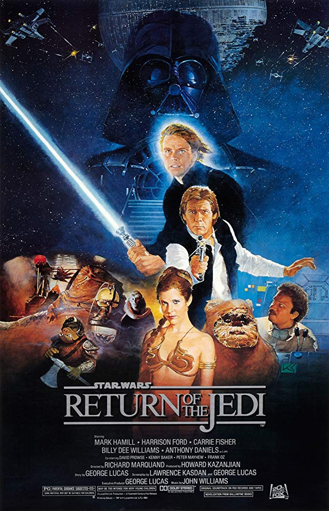
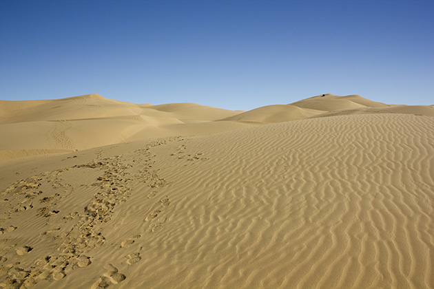
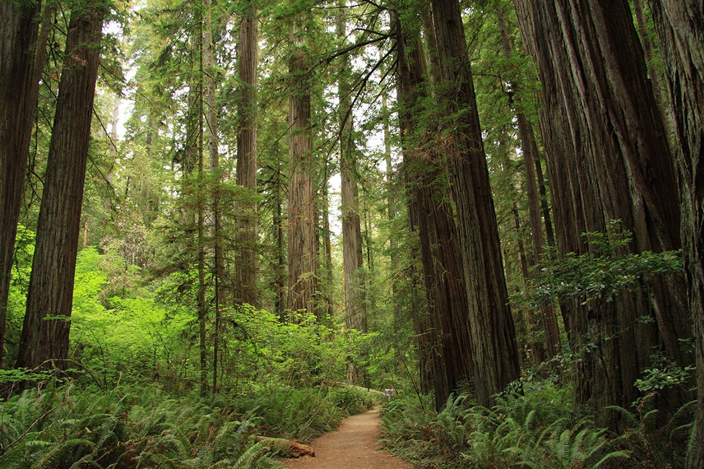

Most Viewed
Return of The Jedi

Synopsis:
Luke Skywalker (Mark Hamill) battles horrible Jabba the Hut and cruel Darth Vader to save his comrades in the Rebel Alliance and triumph over the Galactic Empire. Han Solo (Harrison Ford) and Princess Leia (Carrie Fisher) reaffirm their love and team with Chewbacca, Lando Calrissian (Billy Dee Williams), the Ewoks and the androids C-3PO and R2-D2 to aid in the disruption of the Dark Side and the defeat of the evil emperor.Studio filming for this, the third in the original trilogy, was again at Elstree Studio in Hertfordshire, southeast England, but exteriors were further afield.
‘Tatooine’, was found in Tunisia for Star Wars Episode IV: A New Hope, but Raiders of the Lost Ark had run into problems filming in the country – though George Lucas returned to Tunisia for Star Wars Episode 1: The Phantom Menace and for Attack Of The Clones.
The location for Episode VI is the desert near Yuma on the Arizona / California border.
 Imperial Sand Dunes, Buttercup Valley, ArizonaJabba the Hutt’s huge (80 feet high, 212 feet long) hover barge was built at the Imperial Sand Dunes in Buttercup Valley, south of I-8, just to the west of Yuma. More recently, Jarhead and The Scorpion King were filmed in the same area.
More otherworldly landscapes were found in the barren landscapes of Death Valley, California.
The monster trees on the ‘Moon of Endor’, up to 300 feet tall and 20 feet in diameter, are the giant Redwood groves of the Jedediah Smith Redwoods State Park, 4241 Kings Valley Road, nine miles east of Crescent City on Highway 199, northern California.
 Jedediah Smith Redwoods State Park, Crescent City, CaliforniaReturn Of The Jedi was filmed in strict secrecy, masquerading on location under the title Blue Harvest – Horror Beyond Imagination.